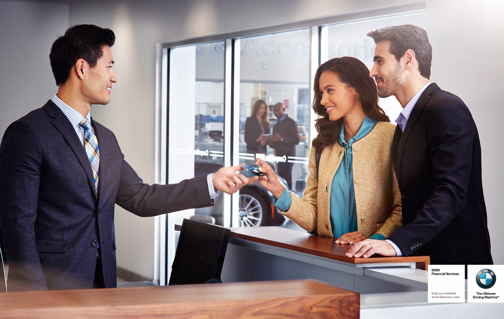

Borusan Otomotiv, müşterilerinin kullandığı ürünlerle ilgili olarak, üretici tarafından herhangi bir yasal müdahaleye gerek kalmadan gönüllü ve ücretsiz geri çağırma ve düzeltme işlemleri yürütmektedir. Bu işlemler, Üretici Teknik Departmanı'nın önerileri doğrultusunda gerçekleştirilir ve otomobilinizin üstün kalite ile yüksek teknik standartlarını koruması açısından büyük önem taşır.
Bu sayfa üzerinden, BMW otomobiliniz için geçerli bir Gönüllü Geri Çağırma işlemi olup olmadığını kolayca sorgulayabilirsiniz.

BMW'nizin herhangi bir Gönüllü Geri Çağırma işleminden etkilenip etkilenmediğini öğrenmek için, 17 haneli şasi numaranızı (VIN) girerek sorgulama yapabilirsiniz. Şasi numaranız, araç ruhsatınızda yer almaktadır.